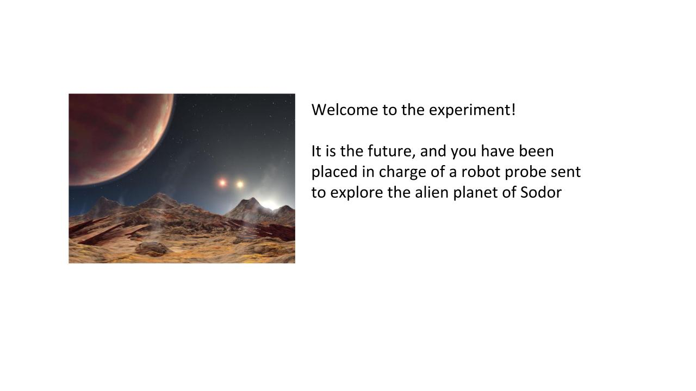
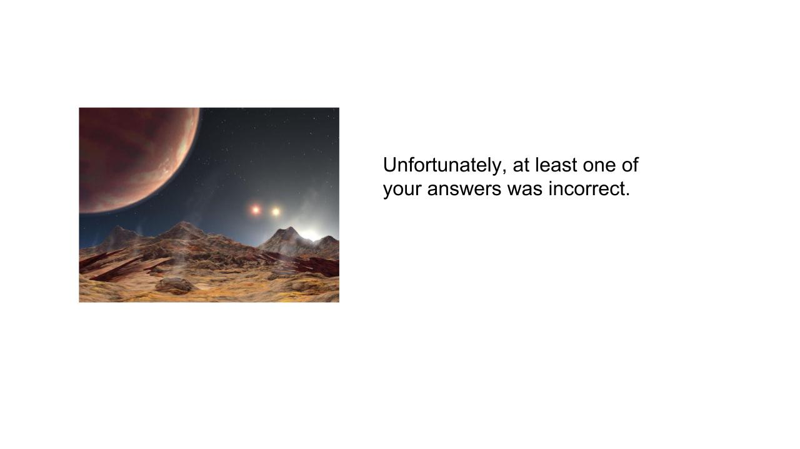

<!doctype html>
<html>

  <head>
    <title>UNSW CCS</title>
    <script src="./js/jquery.min.js"></script>
    <script src="./js/jspsych.js"></script>
    <script src="./js/plugins/jspsych-survey-multi-choice.js"></script>
	<script src="./js/plugins/jspsych-button-response.js"></script>
	<script src="./js/welcome.js"></script>
    <link href="./js/css/jspsych.css" rel="stylesheet" type="text/css"></link>
  </head>

  <body>
	  <div id="welcome"></div>
  </body>

  <script>

	  /* initialise timeline*/
      var timeline=[];
      var introloop=[];
      var timeline1=[];
      var timeline2=[];
      var splash1=[];
      var splash2=[];
      var robottestorder = jsPsych.randomization.shuffle([2, 3, 4, 5, 6, 7, 8]); // omit test item 1
      var islandtestorder = jsPsych.randomization.shuffle([2, 3, 4, 5, 6, 7]);
	  var condition = jsPsych.randomization.shuffle(["category","property"])[0]; // same for both tasks
      var baserate = jsPsych.randomization.shuffle(["small","large"])[0];
      var firsttask = jsPsych.randomization.shuffle(["island","robot"])[0];

      var images = [
		  './img/robot1.jpg',
		  './img/robot2.jpg',
		  './img/robot3_' + baserate + '.jpg',
		  './img/robot4_' + baserate + '.jpg',
	  	  './img/robot5_' + baserate + '.jpg',
          './img/robot6.jpg',
          './img/robot7.jpg',
          './img/robot8_' + condition + '.jpg',
          './img/robot9_' + condition + '.jpg',
          './img/robot10_' + baserate + '_' + condition + '.jpg',
          './img/instructionfail.jpg',
          './img/instructionsuccess_' + baserate + '_' + condition + '.jpg',
		  './img/data0_' + baserate + '_' + condition + '.jpg',
		  './img/data1_' + baserate + '_' + condition + '.jpg',
		  './img/data2_' + baserate + '_' + condition + '.jpg',
		  './img/data3_' + baserate + '_' + condition + '.jpg',
		  './img/data4_' + baserate + '_' + condition + '.jpg',
		  './img/data5_' + baserate + '_' + condition + '.jpg',
		  './img/data6_' + baserate + '_' + condition + '.jpg',
		  './img/data7_' + baserate + '_' + condition + '.jpg',
		  './img/data8_' + baserate + '_' + condition + '.jpg',
		  './img/data9_' + baserate + '_' + condition + '.jpg',
		  './img/interim1_' + condition + '.jpg',
		  './img/interim2_' + baserate + '_' + condition + '.jpg',
		  './img/interim3_' + baserate + '_' + condition + '.jpg',
		  './img/test1.jpg',
		  './img/test2.jpg',
		  './img/test3.jpg',
		  './img/test4.jpg',
		  './img/test5.jpg',
		  './img/test6.jpg',
		  './img/test7.jpg',
		  './img/test8.jpg',
          './img2/category1.png',
          './img2/category2.png',
          './img2/category3.png',
          './img2/category4.png',
          './img2/generalisation1.png',
          './img2/generalisation2.png',
          './img2/generalisation3.png',
          './img2/generalisation4.png',
          './img2/generalisation5.png',
          './img2/generalisation6.png',
          './img2/generalisation7.png',
          './img2/intro.png',
          './img2/intro2.png',
          './img2/largeworld1.png',
          './img2/largeworld2.png',
          './img2/largeworld3.png',
          './img2/property1.png',
          './img2/property2.png',
          './img2/property3.png',
          './img2/property4.png',
          './img2/smallworld1.png',
          './img2/smallworld2.png',
          './img2/smallworld3.png',
          './img3/splash1.png',
          './img3/splash2.png'
	  ];


      /* function to start the jsPsych experiment */
      function startExperiment(){

          // record the condition info in the jsPsych data
          jsPsych.data.addProperties({
                sampling: condition,
                baserate: baserate,
                robottestorder: robottestorder.toString(),
                islandtestorder: islandtestorder.toString()
          });

          jsPsych.init({
            timeline: timeline,
            preload_images: images,
            on_finish: function() {
                endExperiment( jsPsych.data.dataAsCSV(), function() { document.write('<div id="endscreen" class="endscreen" style="width:1000px"><div class="endscreen" style="text-align:center; border:0px solid; padding:10px; font-size:120%; width:800px; float:right"><p><br><br><br>All done!<br><br>Please wait for your instructor to continue the tutorial</p></div></div>') })
            }
          });
      }

      /* save and finish */
      function endExperiment(dataset,callback) {
          //$.post('submit',{"content": dataset}); // uncomment to post data 
          setTimeout(callback,1000)

      }


      // ROBOT TASK

      /* define setup block */
      var setup_block = {
          type: 'button-response',
          timing_post_trial: 0,
	      button_html: '<button class="jspsych-btn" style="display:none">%choice%</button>',
          choices: ['Click here to continue'],
          on_trial_start: function() { setTimeout(function() {setDisplay("jspsych-btn","")}, 3000)},
          is_html: true,
          timeline: [
              {stimulus: ''},
		      {stimulus: ''},
              {stimulus: ''},
              {stimulus: ''},
              {stimulus: ''},
              {stimulus: ''},
              {stimulus: ''},
              {stimulus: ''},
              {stimulus: ''},
              {stimulus: ''}
          ]
      };
      introloop.push(setup_block);


      /* define instruction check block */
      var instructioncorrect = false;
      var q3a;
      if(condition == "category") {
          q3a = [" Yes, it checks every sphere it encounters"," No, it only tests the small spheres"];
      } else {
          q3a = [" Yes, it checks every sphere it encounters"," No, it only tests spheres with the plaxium coating"];
      }

	  var instruction_check = {
          type: "survey-multi-choice",
          preamble: ["<p align='center'><b>Check your knowledge before you begin!</b></p>"],
          questions: ["<b>Question 1</b>: What is your goal in this task?", "<b>Question 2</b>: Are some kinds of Sodor sphere very rare?","<b>Question 3</b>: Does the probe transmit data about any sphere it encounters?"],
          options: [[" To find out if the planet Sodor is made of cheese"," To find out which Sodor spheres have plaxium coatings"],[" Yes, large spheres are rare", " Yes, small spheres are rare", " No, they are equally common"],q3a],
          on_finish: function(data) {

              if(condition == "category" & baserate == "small") {
                if( data.responses == '{"Q0":" To find out which Sodor spheres have plaxium coatings","Q1":" Yes, large spheres are rare","Q2":" No, it only tests the small spheres"}') {
                  action = false;
                  instructioncorrect = true;
                }
              }

              if(condition == "property" & baserate == "small") {
                if( data.responses == '{"Q0":" To find out which Sodor spheres have plaxium coatings","Q1":" Yes, large spheres are rare","Q2":" No, it only tests spheres with the plaxium coating"}') {
                  action = false;
                  instructioncorrect = true;
                }
              }

             if(condition == "category" & baserate == "large") {
                if( data.responses == '{"Q0":" To find out which Sodor spheres have plaxium coatings","Q1":" Yes, small spheres are rare","Q2":" No, it only tests the small spheres"}') {
                  action = false;
                  instructioncorrect = true;
                }
              }

              if(condition == "property" & baserate == "large") {
                if( data.responses == '{"Q0":" To find out which Sodor spheres have plaxium coatings","Q1":" Yes, small spheres are rare","Q2":" No, it only tests spheres with the plaxium coating"}') {
                  action = false;
                  instructioncorrect = true;
                }
              }

              //console.log(hack)
          }
      }
      introloop.push(instruction_check)

      var showsplash = true;
      var splash_screen = {
          type: 'button-response',
          timing_post_trial: 0,
	      button_html: '<button class="jspsych-btn" style="display:none">%choice%</button>',
          choices: ['Click here to read the instructions again'],
          on_trial_start: function() { setTimeout(function() {setDisplay("jspsych-btn","")}, 1000)},
          is_html: true,
          stimulus: ''
      }

      var conditional_splash = {
          timeline: [splash_screen],
          conditional_function: function(data) {
              return !instructioncorrect // skip if correct
          }
      }
      introloop.push(conditional_splash)

      var loop_node = {
          timeline: introloop,
          loop_function: function(data) {
              //var action = true;
              return !instructioncorrect // stop looping if correct


          }
      }
      timeline1.push(loop_node)

      /* success trial */
      var successtrial = {
          type: 'button-response',
          timing_post_trial: 0,
	      button_html: '<button class="jspsych-btn" style="display:none">%choice%</button>',
          choices: ['Click here to begin the mission'],
          on_trial_start: function() { setTimeout(function() {setDisplay("jspsych-btn","")}, 1000)},
          is_html: true,
          timeline: [
              {stimulus: ''},
              {stimulus: ''}
            ]
      };
      timeline1.push(successtrial);

	  /* define observation trial */
      var arrivalprompt;
      if(condition == "property") {
          arrivalprompt = "The probe has detected a sphere with plaxium: Click here to view";
      } else {
          arrivalprompt = "The probe has found and tested a small sphere: Click here to view";
      }
      var waitprompt = "<p align='center' style='color:white'>...</p>";

      var obs_block = {
          type: 'button-response',
          timing_post_trial: 0,
	      button_html: '<button class="jspsych-btn" style="display:none">%choice%</button>',
          choices: [arrivalprompt],
          on_trial_start: function() { setTimeout(function() {setDisplay("jspsych-btn","")}, (Math.random() * 3000) + 3000)},
          is_html: true,
          timeline: [
              {stimulus: ''},
              {stimulus: ''},
              {stimulus: ''},
              {stimulus: ''},
              {stimulus: ''},
              {stimulus: ''},
              {stimulus: ''},
              {stimulus: ''},
              {stimulus: ''},
              {stimulus: ''}
         ]
      };
      timeline1.push(obs_block);

	  /* define interim block */
      var interim_block1 = {
          type: 'button-response',
          timing_post_trial: 0,
		  button_html: '<button class="jspsych-btn" style="display:none">%choice%</button>',
          choices: ['Click here to continue'],
          on_trial_start: function() { setTimeout(function() {setDisplay("jspsych-btn","")}, 2000)},
		  is_html: true,
          timeline: [
              {stimulus: ''},
			  {stimulus: ''}
          ]
      };
      timeline1.push(interim_block1);

      /* define interim block */
      var interim_block2 = {
          type: 'button-response',
          timing_post_trial: 0,
		  button_html: '<button class="jspsych-btn" style="display:none">%choice%</button>',
          choices: ['As a reminder, here are all the transmissions you received.<br>Please take a moment to review this information.<br>When you are ready, click here to proceed.'],
          on_trial_start: function() { setTimeout(function() {setDisplay("jspsych-btn","")}, 500)},
		  is_html: true,
          stimulus: ''
      };
      timeline1.push(interim_block2);


      // function to change the display property of a set of objects
      function setDisplay(theClass, theValue) {
	       var i, classElements = document.getElementsByClassName(theClass);
	       for (i = 0; i < classElements.length; i = i + 1) {
		      classElements[i].style.display = theValue;
	       }
      }

      /* function that generates test string */
	  function testString(ind) {
		  var str;
		  str = "<p width=800px><span id='qqqqq' style='display:none'>In your opinion, how likely is it that a Sodor sphere of this size has a plaxium coating?</span></p>"
	  	return(str)
	  }

	  /* define test block */
	  var test_block = {
	      type: 'button-response',
	      choices: ['1', '2', '3', '4', '5', '6', '7', '8', '9', '10'],
		  timing_post_trial: 500,
          button_html: '<button class="jspsych-btn" style="display:none">%choice%</button>',
		  randomize_order: true, // <- HM.
	      prompt: "<p class='center-content'><span id='zzzzz' style='display:none'>[1 = Definitely does not] &nbsp; &nbsp; &nbsp; &nbsp; &nbsp; &nbsp; &nbsp; &nbsp; &nbsp;  &nbsp; &nbsp; &nbsp; &nbsp; &nbsp; &nbsp; &nbsp; &nbsp; &nbsp; &nbsp; &nbsp; &nbsp; &nbsp; &nbsp; &nbsp;  &nbsp; &nbsp; &nbsp; [10 = Definitely does]</span></p>",
		  is_html: true,
          on_trial_start: function() { setTimeout(function() {document.getElementById("zzzzz").style.display = ""; document.getElementById("qqqqq").style.display = ""; setDisplay("jspsych-btn","")}, 1000)},
		  timeline: [
              {stimulus: testString(robottestorder[0])},
			  {stimulus: testString(robottestorder[1])},
			  {stimulus: testString(robottestorder[2])},
              {stimulus: testString(robottestorder[3])},
			  {stimulus: testString(robottestorder[4])},
			  {stimulus: testString(robottestorder[5])},
              {stimulus: testString(robottestorder[6])}
		  ]
	  };
	  timeline1.push(test_block);


      // ISLAND TASK

      /* define setup block */
      var islandsetup = {
          type: 'button-response',
          timing_post_trial: 0,
	      button_html: '<button class="jspsych-btn" style="display:none">%choice%</button>',
          choices: ['Click here to continue'],
          on_trial_start: function() { setTimeout(function() {setDisplay("jspsych-btn","")}, 3000)},
          is_html: true,
          timeline: [
              {stimulus: ''},
		      {stimulus: ''},
              {stimulus: ''},
              {stimulus: ''},
              {stimulus: ''},
              {stimulus: ''},
              {stimulus: ''},
              {stimulus: ''},
              {stimulus: ''},
              {stimulus: ''}
          ]
      };
      timeline2.push(islandsetup);

      /* define test block */
	  var islandtest = {
	      type: 'button-response',
	      choices: ['1', '2', '3', '4', '5', '6', '7', '8', '9', '10'],
		  timing_post_trial: 500,
          button_html: '<button class="jspsych-btn" style="display:none">%choice%</button>',
		  randomize_order: true, // <- HM.
	      prompt: "<p class='center-content'><span id='zzzzz' style='display:none'>[1 = Definitely does not] &nbsp; &nbsp; &nbsp; &nbsp; &nbsp; &nbsp; &nbsp; &nbsp; &nbsp;  &nbsp; &nbsp; &nbsp; &nbsp; &nbsp; &nbsp; &nbsp; &nbsp; &nbsp; &nbsp; &nbsp; &nbsp; &nbsp; &nbsp; &nbsp;  &nbsp; &nbsp; &nbsp; [10 = Definitely does]</span></p>",
		  is_html: true,
          on_trial_start: function() { setTimeout(function() {document.getElementById("zzzzz").style.display = ""; setDisplay("jspsych-btn","")}, 1000)},
		  timeline: [
              {stimulus: ''},
			  {stimulus: ''},
			  {stimulus: ''},
              {stimulus: ''},
			  {stimulus: ''},
			  {stimulus: ''}
		  ]
	  };
	  timeline2.push(islandtest);

      /* create mini timelines for splash screens */
      var splashscreen1 = {
          type: 'button-response',
          timing_post_trial: 0,
	      button_html: '<button class="jspsych-btn" style="display:none">%choice%</button>',
          choices: ['Click here to begin task 1'],
          on_trial_start: function() { setTimeout(function() {setDisplay("jspsych-btn","")}, 3000)},
          is_html: true,
          stimulus: ''
      };
      splash1.push(splashscreen1);

      /* create mini timelines for splash screens */
      var splashscreen2 = {
          type: 'button-response',
          timing_post_trial: 0,
	      button_html: '<button class="jspsych-btn" style="display:none">%choice%</button>',
          choices: ['Click here to begin task 2'],
          on_trial_start: function() { setTimeout(function() {setDisplay("jspsych-btn","")}, 3000)},
          is_html: true,
          stimulus: ''
      };
      splash2.push(splashscreen2);

      /* concatenate the experiments */
      if (firsttask == "island") {
          timeline = timeline.concat(splash1,timeline2,splash2,timeline1);
      } else {
          timeline = timeline.concat(splash1,timeline1,splash2,timeline2);
      }

      /* start by running the "welcome" */
      welcome.run();

  </script>
</html>
